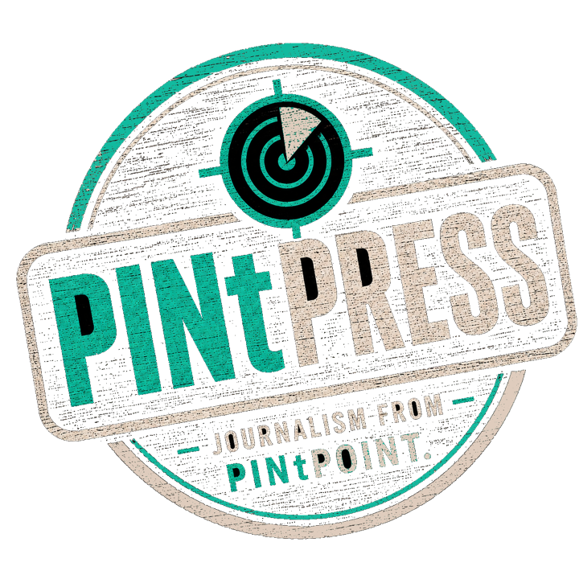

Guides, postcards, essays and notes — nothing sponsored, nothing astroturfed, no SEO farm slop. Written because the pint deserves the thought.
-
30 June 2026 · ObituaryHumphrey Smith: British Beer's Great Awkward CustomerThe Samuel Smith's beer baron who ran Britain's strangest pub chain by his own private rule has died aged 81. On cheap pints, dark wood, shire horses, boarded-up villages and a row over an air freshener — and on why the whole thing may become easier without him and also less peculiar.Read the obituary →
-
23 June 2026 · EssayBefore Kick-Off: Why English Cask Has the AdvantageThe football is heading to the business end. The Beer World Cup is heading the same way. With the Perfect Pint Promise just launched and heritage cask back on the rise — Greene King selling Old Speckled Hen to Spanish lager giant Damm, Draught Bass tripling distribution this year, JW Lees relaunching cask Boddingtons — the case for English cask is loud and current. The squad of eleven hand-pulled pints we'd send into a Beer World Cup, and why cask is the one format the world can't quite copy.Read the essay →
-
19 June 2026 · GuideWorld Cup 2026 Stadium Beer Map: Help Us Find Good Beer Near The GroundsThe World Cup is here, across 16 host stadiums in North America. We mapped the bars, pubs, breweries, taprooms, bottle shops and beer gardens that can actually help fans before or after a match. A first pass, not the final whistle — Atlanta, Seattle, Philadelphia, Vancouver and Toronto landed cleanly; Dallas, the Bay Area and Mexico City need local knowledge; MetLife is still the loudest help-wanted flag. Open PINtPOINT near a host stadium and add what we missed.Read the guide →
-
19 June 2026 · FeatureBeer World Cup XI: 48 Nations, Real Fixtures, Stupidly Serious Beer ResultsThe football teams play on the pitch. The beers play in the pub. Every country in the World Cup gets a beer squad; real fixtures drive the matchups; Pub VAR, The Selection Committee and The Pint Desk arbitrate the disputes. A serialised editorial tournament loosely based on a distant memory of Loaded magazine's lost Beer World Cup. Help us pick the squads.Read the feature →
-
2 June 2026 · EssayBeerology — The Anatomy of a PintWhat does this beer actually feel like to drink? Eight axes — Body, Bitterness, Sweetness, Roast, Fruit, Finish, Softness, Complexity — plus four drinker cues, a drinkability bucket, and one plain-English gut-take sentence per beer. Built for the 800-millisecond tap-list decision; honest about the sour and Belgian-yeast styles it doesn't cover. The capstone of the four-essay arc on choosing the right pint.Read the essay →
-
31 May 2026 · EssayFollowing the Firkin trail(s)…In 1979 David Bruce opened the Goose & Firkin in Elephant and Castle. By 1995 the chain had 44 pubs, 19 of them brewing on site. On 8 October 1999 the brewing stopped — and that, not the 2001 brand-discontinuation, is when Firkin actually died. The 12 original London Firkin sites, plotted on a 1990 paper leaflet, traced — deliberately — the outline of a dog's head. Companion: walk the route in PINtPOINT's new Hall-of-Fame crawl.Read the essay →
-
24 May 2026 · EssayAnchor Brewing's British heritage runs deeper than people realiseThree of Anchor's signature beers were lifted from English brewing on a 1975 Yorkshire pub tour. The Great American Beer Festival was modelled on CAMRA's GBBF. For fifteen years a Halifax distributor kept Anchor on UK draught. The companion to Friday's revival piece: the case that Anchor's identity was always partly English — and what that means for a return to UK taps.Read the essay →
-
22 May 2026 · EssayAnchor Brewing looks to be coming back. The 2021 rebrand isn't.Construction crews at Potrero Hill, twenty months of silence from a billionaire owner, and a homepage in May 2026 still wearing the 1896 logo — not the 2021 mark drinkers hated. Anchor's revival is moving from rumour into pre-brewing infrastructure. What's coming back, on the evidence, is the older Anchor.Read the essay →
-
20 May 2026 · EssayUnder the Hood: How PINtDEXTER Picks Your PintThe engineering follow-up to the recommender essay. The four layers PINtDEXTER stacks under the hood — preference capture, manual sliders, per-beer LLM-inferred flavour DNA, and venue-aware scoring — and the misclassified pale lager that exposed the most recent fix. For the data-science curious.Read the essay →
-
16 May 2026 · NoteSave Our Pubs, In One Pub: The Bell at IngatestoneWe walked into the Bell to claim a free pint of Telegraph Ale on Saturday. PINtPOINT's Financial Pressure Index also flags the same building as Struggling — rates up 74% vs 2023, FPI 44.38/100. The campaign's structural argument, made personal, on the bar in front of us.Read the note →
-
16 May 2026 · NewsFour Pubs a Day Are Closing. The Telegraph's Answer Is a Free Pint.Saturday 16 May is the Telegraph's National Pub Day. Renegade Brewery — the West Berkshire outfit that took on the West Berkshire estate after the 2023 collapse — has brewed Telegraph Ale, a 4% cask English bitter, for over 250 participating pubs nationwide. The campaign sits inside Save Our Pubs, the Telegraph's response to a closure rate of roughly four pubs a day.Read the news note →
-
14 May 2026 · EssayFrom Half of British Beer to Half a Percent — What Happened to MildIn 1959 mild was still half the beer Britain drank. By 2011 it was 0.5%. How Britain's everyday beer became a rarity — and why Mild May is trying to bring it back. Pattinson, Cornell and Boak & Bailey on the collapse; the modern fork between stalwarts and craft revisionists.Read the essay →
-
8 May 2026 · NoteThe Sparkler Question — A Field Guide to Britain's Quietest Cask ArgumentA small nozzle. A 140-year argument. Mostly a Northern tradition, with London outposts at the Queen's Arms and the Punch Tavern. From 14 May the Whippet adds a sparklered Boddingtons to the Liverpool Street commute.Read the note →
-
5 May 2026 · NoteThe Whippet: Why This Could Be One of London's Most Interesting Beer Openings of 2026June update: The Whippet still is not pouring Augustiner, but it has quietly built one of the more unusual lager line-ups near Liverpool Street — Bitburger, Kutna Hora, Tegernseer, Benediktiner and more — alongside Boddingtons cask with a sparkler.Read the note →
-
1 May 2026 · NoteRadio City Turns 7: 7 Cans, 7 Sins, 35 Launch Venues — and One Big Saturday in ChelmsfordSaturday 9 May 2026 — Radio City Beer Works in Radley Green throws its biggest birthday yet, preceded two days earlier by the nationwide can launch of the Seven Deadly Sins. Lust × Black Iris (Strawberry Vanilla Pastry Sour), Wrath × Ampersand (Southern Hemisphere IPA), Gluttony × Vibrant Forest (Imperial Stout 8.4%), and four more. Full launch-venue locator inside.Read the note →
-
1 May 2026 · NoteBlackhorse Beer Mile 4th Birthday: All 10 Participating Venues with PINtPOINT LinksSunday 3 May 2026 — Walthamstow's brewery-district mile turns four with an all-day, free-entry, family-friendly takeover across 10 east-London craft venues: Big Penny Social, Exale, Signature, Borough Wines, Burnt Faith, East London Brewing Co, plus 40FT, Hackney Church, Renegade and Pretty Decent. Every venue with a PINtPOINT deeplink plus the canonical Hall of Fame crawl.Read the note →
Got a topic you'd like us to cover? hello@pintpoint.co.uk